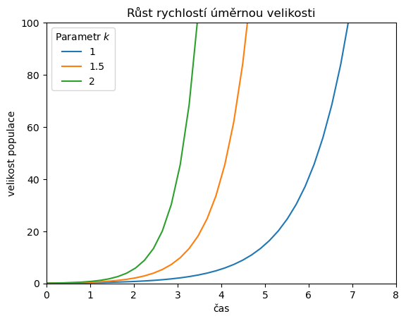
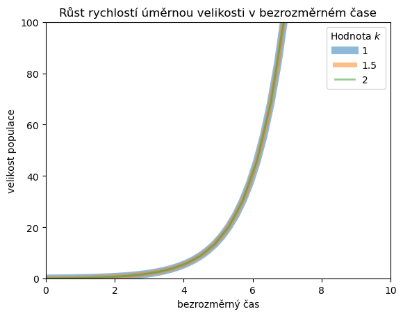

Diferenciální rovnice 2
Contents
4. Diferenciální rovnice 2#
4.1. Exponenciální růst#
Namodelujeme exponenciální růst
\[\frac{\mathrm dx}{\mathrm dt}=kx\]
pro tři různé parametry \(k\). Protože po transformaci do bezrozměrného času \(\tau = kt\) má rovnice tvar
\[\frac{\mathrm dx}{\mathrm d\tau }=x\]
nezávislý na \(k\), ověříme, že všechna řešení po transformaci do bezrozměrného času splývají.
Nejprve růst pro tři různé hodnoty koeficientu \(k\). Vidíme, že čím vyšší je \(k\), tím rychleji velikost populace roste v čase.
import matplotlib.pyplot as plt
import numpy as np
import pandas as pd
from scipy.integrate import solve_ivp
pocatecni_podminka = np.array([0.1])
meze = np.array([0,10])
ks = [1,1.5,2]
def rovnice(t, x, k=1):
return k*x
reseni = [
solve_ivp(rovnice,
meze,
pocatecni_podminka,
dense_output=True,
args=[k],
#max_step=0.1, ## defaultní je krok libovolné délky
)
for k in ks
]
t = np.linspace(*meze)
for k,r in zip(ks,reseni):
plt.plot(t,r.sol(t)[0],label=k)
ax = plt.gca()
ax.set(
ylim=(0,100),
xlim=(0,8),
xlabel="čas",
ylabel="velikost populace",
title="Růst rychlostí úměrnou velikosti"
)
plt.legend(title=r"Parametr $k$");

Po transformaci do bezrozměrného času by měly křivky splynout. Abychom to viděli graficky, budeme postupně snižovat jejich tloušťku a nastavíme částečnou průhlednost. To zajistíme volbami lw (zkratka za linewidth) a alpha.
t = np.linspace(*meze)
for k,r,lw in zip(ks,reseni,[8,5,2]):
plt.plot(t*k,r.sol(t)[0],lw=lw,label=k,alpha=0.5)
ax = plt.gca()
ax.set(
ylim=(0,100),
xlim=(0,10),
xlabel="bezrozměrný čas",
ylabel="velikost populace",
title="Růst rychlostí úměrnou velikosti v bezrozměrném čase"
)
plt.legend(title=r"Hodnota $k$");

4.2. Exponenciální růst k vodorovné asymptotě#
4.2.1. Úkol#
Nakreslete řešení rovnice růstu k vodorovné asymptotě (von Bertalanffyho růst)
\[\frac{\mathrm dL}{\mathrm dt}=k(L_\infty-L)\]
pro tři různé hodnoty parametru \(L_\infty\).
# Sem vložte řešení.
4.3. Logistický růst#
4.3.1. Úkol#
Vykreslete řešení logistické rovnice
\[\frac{\mathrm dx}{\mathrm dt}=rx\left
(1-\frac xK\right)\]
pro cca deset počátečních podmínek rovnoměrně rozmístěných mezi \(0\) a \(K\).
# Sem vložte řešení. Můžete jej rozdělit do více buněk, které si sem vložíte.
4.3.2. Logistická rovnice v bezrozměrném tvaru#
Nyní si ukážeme, že v určitém smyslu stačí bez újmy na obecnosti studovat případ \(K=1\) a \(r=1\). Na rovnici
\[\frac{\mathrm dy}{\mathrm d\tau}=y(1-y)\]
se totiž logistická rovnice transformuje při přechodu od rovnice
\[\frac{\mathrm dx}{\mathrm d t}=rx\left(1-\frac xK\right)\]
s použitím substituce \(y=\frac xK\) a \(\tau = rt\). Najdeme \(y(\tau)\) jako řešení bezrozměrné rovnice s jednotkovými parametry a \(x(t)\) jako řešení rovnice s náhodnými parametry \(r\) a \(K\). Poté ukážeme na několika numerických hodnotách, že platí
\[y(t) = K x(rt).\]
pocatecni_podminka = np.array([0.1])
meze = np.array([0,10])
def rovnice(t, x, r=1, K=1):
return r*x*(1-x/K)
# r a K budou náhodná čísla z intervalu (0,0.2) a (0,10).
K,r = np.array([10,0.2])*np.random.random(2)
print(r,K)
reseni_plne_rovnice = solve_ivp(
rovnice,
meze,
pocatecni_podminka,
dense_output=True,
args=[r,K],
#max_step=0.1, ## defaultní je krok libovolné délky
)
reseni_bezrozmerne_rovnice = solve_ivp(
rovnice,
r*meze, # převod mezí na bezrozměrný čas
pocatecni_podminka/K, # převod na bezrozměrnou velikost populace
dense_output=True,
#args=[1,1], # koeficienty pro bezrozměrnou rovnici jdou defaultní
#max_step=0.1, ## defaultní je krok libovolné délky
)
t = np.linspace(*meze,12)
df = pd.DataFrame()
df["t"] = t
df["plnohodnotna"] = reseni_plne_rovnice.sol(t)[0]
bezrozmerny_cas = r*t
bezrozmerna_velikost = reseni_bezrozmerne_rovnice.sol(bezrozmerny_cas)[0]
velikost_populace = K*bezrozmerna_velikost
# velikost_populace = K*reseni_bezrozmerne_rovnice.sol(r*t)[0]
df["bezrozmerna"] = velikost_populace
df["rozdil"] = np.abs(df["bezrozmerna"]-df["plnohodnotna"])
df["relativni rozdil"] = df["rozdil"]/df["plnohodnotna"]
df
0.07294017697054223 9.735615958728202
| t | plnohodnotna | bezrozmerna | rozdil | relativni rozdil | |
|---|---|---|---|---|---|
| 0 | 0.000000 | 0.100000 | 0.100000 | 1.387779e-17 | 1.387779e-16 |
| 1 | 0.909091 | 0.106781 | 0.106781 | 4.966628e-10 | 4.651249e-09 |
| 2 | 1.818182 | 0.114015 | 0.114015 | 6.743138e-08 | 5.914237e-07 |
| 3 | 2.727273 | 0.121734 | 0.121735 | 2.208754e-07 | 1.814405e-06 |
| 4 | 3.636364 | 0.129969 | 0.129969 | 1.787652e-07 | 1.375445e-06 |
| 5 | 4.545455 | 0.138752 | 0.138752 | 5.942001e-08 | 4.282449e-07 |
| 6 | 5.454545 | 0.148120 | 0.148120 | 5.085688e-08 | 3.433492e-07 |
| 7 | 6.363636 | 0.158109 | 0.158109 | 9.869713e-08 | 6.242329e-07 |
| 8 | 7.272727 | 0.168761 | 0.168761 | 6.366742e-08 | 3.772639e-07 |
| 9 | 8.181818 | 0.180117 | 0.180117 | 4.173059e-08 | 2.316863e-07 |
| 10 | 9.090909 | 0.192222 | 0.192222 | 1.720603e-07 | 8.951142e-07 |
| 11 | 10.000000 | 0.205122 | 0.205123 | 2.489500e-07 | 1.213666e-06 |
df.rozdil.max()
2.489499512092763e-07
df["relativni rozdil"].max()
1.814404718789715e-06